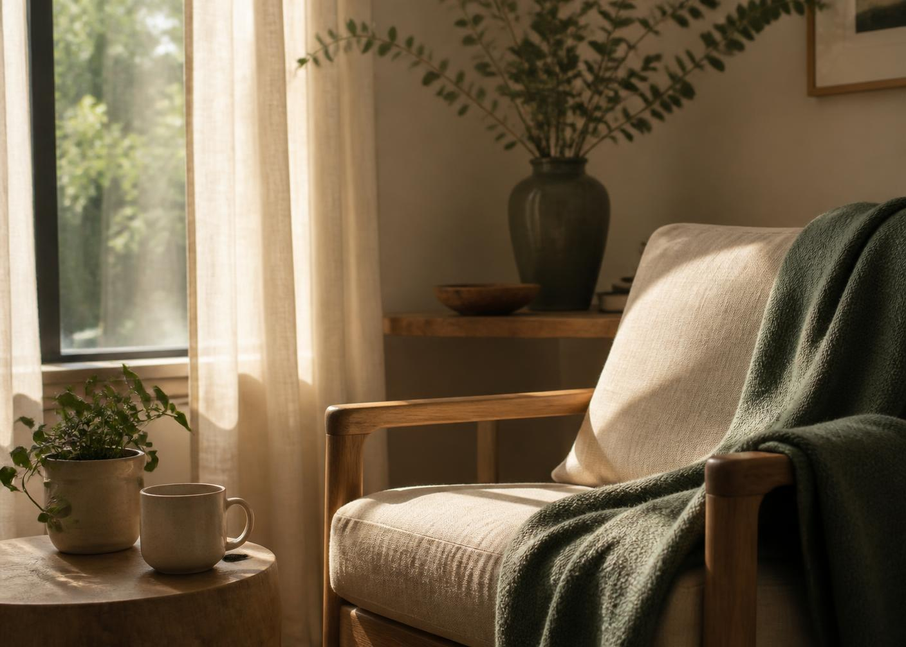

What we offer
Articles, podcasts, e-books, book-club sessions, guided courses, moderated community rooms, and consultation booking.

Thoughtful support for your mental wellbeing through compassionate care, practical guidance, and a community that understands.
We make mental-health learning clearer, more practical, and easier to discuss in daily life.
MindfulPath brings together education, social context, guided training, community dialogue, and supported pathways to professional consultation.
Articles, podcasts, e-books, book-club sessions, guided courses, moderated community rooms, and consultation booking.
Our content is educational and community-oriented, with clinical and payment workflows integrated through secured backend APIs.
Whether you want to talk, learn, or simply feel understood, there is a place to begin.
Connect with a qualified practitioner who listens, understands, and meets you where you are.
Explore practical articles, guided exercises, and expert insight for the moments that matter.
Join thoughtful conversations and find steady encouragement from people who understand.
Gentle ways to step out of the loop and back into the present.
Read articleA thoughtful conversation about slowing down without guilt.
Listen nowA private reflection to help you notice what you may need today.
Start reflectionMeet with a compassionate practitioner in a private, judgment-free space. Choose a time that works for you and take the first step when you feel ready.
Start small. Start today. We will meet you there.